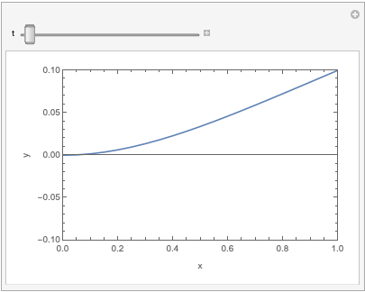

🎓梁のDAF
Background¶
静的荷重を受ける梁の最大変位に対する動的荷重下での最大変位の比率を動的増幅係数(Dynamic Amplification Factor:DAF)と呼ぶ．これは，動的荷重が静的荷重よりも構造にどれだけ大きな影響を与えるかを定量的に表す指標であり，梁の質量を端点に集中させたSingle Dgree of Freedom(SDOF)の場合はステップ荷重に対して，DAF=２になることが知られている．また，DAF=２を上限として橋梁などは設計されることが多い．しかし，実際の構造物は質量が分散しているため，複数の自由度を持つMultiple Dgree of Freedom(MDOF)系や，梁のような連続体としてモデル化されることが多い．
Chao, Z. et al. (2020)は，SDOF系とMDOF系がステップ荷重に対してどのように振る舞うかを調べてた．
論文では，SDOF系のDAFは２になるが，MDOF系のDAFは２よりも大きくなる場合があることが示されている．
Proposing Research Topics¶
Title：MDOF系と連続体としてモデル化した梁の動的増幅係数(DAF)の比較¶
Question
実際の梁は，SDOF系やMDOF系よりも，連続体としてモデル化する方が精確だろう．連続体としてモデル化した場合，梁のDAFはどのようになるだろうか？
Title：ケーブル破断に伴う衝撃力を受けた梁の理論的挙動解析¶
Note
- 使った理論が実現象を正確に表現していない
- 微小変位の仮定の破綻
- 境界条件が適切でない（境界条件を与える位置がずれている）
- 数値解析ミス（数値解析上の間違い）
- 梁要素ケーブル＜ー＞midas ケーブル要素
- ケーブル要素の張力が独特だから＜ー＞インパルスロード
- ケーブル要素の設置角
- ケーブル要素の大きな初期張力
- ケーブル要素の本数
- ケーブルのサグの考慮
- 実は解析は完璧で，実際２倍にはならない
Question
ケーブル破断に伴う衝撃力は，ステップ荷重ではない．また，両側に設置されたケーブルの片方が破断した場合，もう片方のケーブルはどのような影響を梁の挙動に及ぼすだろうか？
ToDO¶
Todo
- 先行研究の調査
- 論文のレビュー：重要な文献を読み、基本概念と既存の知識を理解する．
- 背景と目的の明確化：研究の背景と目的を明確にし、研究の方向性を定める．
- 計算モデルの選定：SDOF，MDOF，連続体の計算方法，特性を理解する．
- 計算の実装
- プログラム言語の選定と学習：計算に適したプログラミング言語を選定し，必要な技術を学習する．
- 各モデルのプログラム実装：SDOF，MDOF，連続体の実装を行い，テストする．
- 計算結果の解析
- DAFの計算と評価：各モデルから得られた結果を用いて動的増幅係数（DAF）を計算しまとめる．
- 怪しい点・問題点を洗い出し，改善できる点を改善し，誰もが納得でき，信頼できる結果を得る．
References¶
- Chao, Z., Hong, H., Kaiming, B., & Xueyuan, Y. (2020). Dynamic amplification factors for a system with multiple-degrees-of-freedom. Earthquake Engineering and Engineering Vibration, 19(2), 363–375. https://doi.org/10.1007/s11803-020-0567-9
棒状構造物の曲げ振動を支配する方程式（オイラー・ベルヌーイの動的梁方程式）¶
得たい式は，既知の情報である構造物が受ける外力と，構造物の変位\(y(x,t)\)との関係を示す式である．角度\(\theta\)や曲率\(\rho\)などは消去して，\(y(x,t)\)だけにしたい．\(d\ell\)の微小要素を抜き出して考える．曲げによって\(d\ell\)から伸縮した長さを\(\Delta d\ell\)とすると，その位置での歪みは，\(\varepsilon = {\Delta d\ell}/{d\ell}\)となる．弾性係数を\(E\)とすると，応力\(\sigma = \sigma (x, y,t)\)は
\eqref{eq:stress}となる．\({\Delta d\ell}\)は断面の位置\(y\)や時間\(t\)によって異なるので，\({\Delta d\ell}={\Delta d\ell}(y,t)\)と考えられる．具体的には，\(y\)を中立軸からの距離として，曲率\(\rho=\rho(x,t)\)を使うと，
\eqref{eq:curvature}から，\(\frac{\Delta d\ell}{d\ell} = \frac{y}{\rho}\)とわかる．
となる．曲率\(\rho\)は直接計算が難しいので，変位の微分を使って書き換える．次の関係式を使う．
となる．よって，
となる．とても複雑な式になってしまった．このままでは，微分方程式を解くことが難しい．
簡単化して解ける形にする（二兎を追う者は一兎をも得ず）¶
我々が出会う多くの問題において，\(\sigma (x,y,t)\)は与えられないことが多く，与えられるのは梁にかかる外力である．梁の単位幅あたりにかかる外力を荷重強度\(q(x,t)\)とする．
簡単化するために考えられる方法は，
- \(\sigma = E \dfrac{y}{\rho}\)を断面方向に面積分し\(y\)を一部消去する．断面に生ずる曲げモーメントの式を得る．
- 傾き\(\theta=\dfrac{dy}{dx} \ll 1\)と仮定する．
Note
荷重強度，剪断力及び曲げモーメントの関係
荷重強度は，\(q(x) = - \frac{dS}{dx}\)，\(S(x)=\frac{dM}{dx}, \frac{dS}{dx} = \frac{d^2M}{dx^2}\)である．
つまり，曲げモーメントの変化率が剪断力，剪断力の変化率がマイナスの荷重強度である．
オイラー・ベルヌーイの静的梁方程式¶
\eqref{eq:bending_moment}からオイラー・ベルヌーイの静的梁方程式は
考え方
\begin{align*} \rightarrow M &= \frac{EI}{\rho}\\ \rightarrow \frac{d^2M}{dx^2} &= \frac{d^2}{dx^2}\left(\frac{EI}{\rho}\right)\\ \rightarrow -q &= \frac{d^2}{dx^2}\left(\frac{EI}{\rho}\right)\\ \rightarrow -q &= \frac{d^2}{dx^2}\left(\frac{EI}{\rho}\right)\\ \rightarrow q &= \frac{d^2}{dx^2}\left(EI \frac{\dfrac{d^2 y}{d x^2}}{\left(1+\left(\dfrac{dy}{dx}\right)^2\right)^{\frac{3}{2}}} \right)\\ \rightarrow q &\approx EI \frac{d^4 y}{dx^4} \end{align*}オイラー・ベルヌーイの動的梁方程式¶
静的な梁の方程式に，慣性力を加えることで，動的な梁の方程式を得ることができる．\(\mu\)は単位長さあたりの質量，\(q\)は単位長さあたりの外力とする．
\(y=y_s+y_d\)と分解する．\(y_s=y_s(x)\)は静的な変位，\(y_d=y_d(x,t)\)は静的な変位からのずれであり，動的なものである．
考え方
\begin{align*} \rightarrow -\mu \frac{\partial^2 (y_s+y_d)}{\partial t^2} + q &= EI \frac{\partial^4 (y_s+y_d)}{\partial x^4}\\ \rightarrow -\mu \frac{\partial^2 y_s}{\partial t^2} -\mu \frac{\partial^2 y_d}{\partial t^2} + q &= EI \frac{\partial^4 y_s}{\partial x^4} + EI \frac{\partial^4 y_d}{\partial x^4}\\ \rightarrow -\mu \frac{\partial^2 y_d}{\partial t^2} &= EI \frac{\partial^4 y_d}{\partial x^4}\\ \rightarrow \frac{\partial^4 y_d}{\partial x^4} + \frac{\mu}{EI} \frac{\partial^2 y_d}{\partial t^2} &= 0 \end{align*} 途中で，$-\mu \frac{\partial^2 y_s}{\partial t^2} + q = EI \frac{\partial^4 y_s}{\partial x^4}$と$\frac{\partial^4 y_s}{\partial x^4}=0$を使った．これは，$y_d$という静的な変位からのずれを表す変位を表す偏微分方程式である．これ以降は，梁を縦に立てたときの変位を考えるので，釣り合いの変位$y_s=0$なので，$y_d$だけを考えることになる．ただし，一般的には，$y_s$についても解く必要があるだろう．オイラー・ベルヌーイの動的梁方程式の解法¶
動的梁方程式を簡単に書くために，\(\lambda^2 = \frac{\mu}{EI}\)とする．
偏微分方程式を解く方法の基本戦略は，方程式を常微分方程式に変換することである．方程式の形から考えて変数分離法がうまくいきそうである．\(y(x,t) = X(x)T(t)\)と変数分離し，元の方程式に代入すると，
このあとの計算を綺麗に整理するために，両辺を\(\beta^4\)だとした．また，\(T''\)は\(\frac{\partial^2 T}{\partial t^2}\)を表す．こうして，変数分離法によって，もともと１つだった偏微分方程式を２つの常微分方程式に分解することができた．
一般解¶
まずは，\(\frac{d ^2 T}{d t^2} + \omega^2T = 0\,,\omega=\frac{\beta^2}{\lambda}\)から考える．この式の一般解は，
次に，\(\frac{d ^4 X}{d t^4} = X\)の一般解を考える．線形の方程式であるので，重ね合わせの原理によって，異なる解の線形結合もまた解であり，各々に係数をかけて足し合わせることで，一般解を得ることができる．\(X=\exp(p x)\)として代入すると，\(p=\pm i \beta, \pm \beta\)の４つの解が得られる．このことから，一般解は，
これは書き換えずにこのままの形を保ち，境界条件から係数を求めていくことにする．
境界条件¶
境界条件は，固定端と自由端を持つ場合を考える．固定端は\(x=0\)，自由端は\(x=\ell\)とする．固定端では，変位\(y\)と曲げモーメントがゼロになる．

もう少し複雑な問題¶
静的な変位がゼロではない場合を考える．上部端点に変位に比例する外力が加わる場合を考える．
静的な変位\(y_s\)は次を満たすとする．
そうすると，\(y_d\)に関する方程式は，